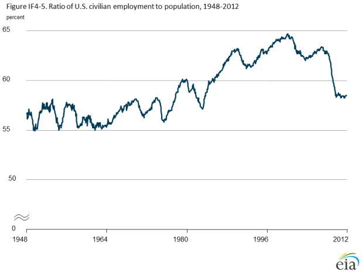
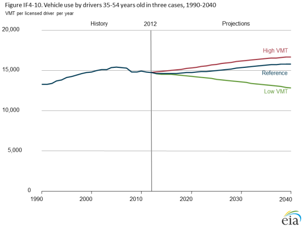

Light-duty vehicle energy demand: demographics and travel behavior
Release Date: 4/16/14
In 2012, energy consumption by light-duty vehicles (LDVs) accounted for 61% of all transportation energy consumption in the United States, or 8.4 million barrels of of oil equivalent per day, and represented nearly 10% of world petroleum liquids consumption. LDV energy use is driven by both LDV fuel economy and travel behavior, as measured by LDV vehicle miles traveled (VMT). LDV VMT per licensed driver peaked in 2007 at 12,900 miles per year and decreased to 12,500 miles in 2012.
The shift in VMT highlights the importance of travel behavior and its influence on LDV energy consumption. Before the 2007 peak, travel behavior in the United States tracked closely with economic growth. Since 2007, trends in U.S. LDV travel have not followed the trends in economic indicators such as income and employment as closely (Figure IF4-1). Although economic factors continue to influence travel demand, demographic, technological, social, and environmental factors also have shown the potential to affect LDV travel.
The AEO2014 Low and High VMT cases examine variations in travel demand as compared with the Reference case. In the Reference case, VMT per licensed driver begin to increase after 2018. The compound annual rate of growth in total VMT for LDVs from 2012 to 2040 in the AEO2014 Reference case is 0.9%—below the 1.7% rate from 1995 to 2005 but higher than the 0.7% average annual growth rate from 2005 through 2012. The Low VMT case assumes an environment in which travel choices made by drivers result in lower demand for personal vehicle travel, consistent with recent trends in VMT per licensed driver. In the Low VMT case, total U.S. LDV travel demand in 2040 is 19% lower than in the Reference case with annual increase in total LDV VMT from 2012 through 2040 averaging 0.2%. The High VMT case assumes changes in travel behavior that result in an increase in VMT per licensed driver compared with the Reference case. In the High VMT case, total U.S. LDV travel demand in 2040 is nearly 6% higher than in the Reference case with annual increase in total LDV VMT from 2012 through 2040 averaging 1.1% (Figure IF4-2).
The alternative VMT cases have direct implications for both projected energy use by LDVs and associated carbon dioxide emissions. In the Low VMT case, U.S. LDVs consume 5.3 million barrels of oil equivalent per day in 2040, 18% less than in the Reference case, resulting in total transportation sector CO2 emissions roughly 9% lower than in the Reference case. In the High VMT case, LDVs consume 6.7 million barrels of oil equivalent per day in 2040, or 5% more than in the Reference case, resulting in total transportation sector CO2 emissions more than 2% higher than in the Reference case (Figures IF4-3 and IF4-4).
figure data
figure data
figure data
figure data
Influential travel demand factors
Fuel use by LDVs is directly related to travel demand, which in turn depends on economic, demographic, technological, social, and environmental factors. In general, the demand for LDV travel is likely to decline when licensing rates fall [1], use of telework increases, or fuel prices are relatively high. Fuel use by LDVs is likely to rise when the driving-age population grows, during periods of expanding economic activity, or when fuel prices are relatively low.
Economic factors
Although recent U.S. travel indicators have started to decouple from economic indicators, economic indicators still are a dominant influence on levels of personal travel. There are strong links between economic activity and employment and commuting. Employment rates (Figure IF4-5) largely determine the ability of individuals to travel. When people are not employed and have less income, their daily travel is likely to be much lower than when they are commuting to and from work.
The labor force participation rate, defined as the percentage of the total population ages 16 years and older that is employed or looking for work, has declined since the early 2000s [2]. Reasons for the decline include increasing retirements and lack of opportunities in the job market (which cause those without jobs to give up on job searches). When the labor force participation rate declines, the unemployment rate may also decline as people are removed from the labor pool, even if overall employment is stable. If the trend continues, retirees and people having difficulty finding jobs may reduce their travel as compared with people who have similar demographic profiles and are employed. When labor force participation rates rise, VMT per driver is likely to increase, particularly for millennials (those born between the early 1980s and early 2000s).
figure data
Other macroeconomic factors also influence travel behavior. Income, fuel prices, the costs of purchasing a vehicle, and other vehicle operating costs all influence the extent to which an individual can afford LDV travel. Households with vehicle ownership rates that equal or exceed the number of licensed drivers in the household have maximum non-overlapping access to vehicles. More recently, a business model that provides drivers with access to a shared-pool of vehicles has developed, particularly in urban areas. Because users of shared pool vehicles incur charges for time of use as well as fuel, this model discourages vehicle use for low-value trips. Income provides the financial means to own and operate a vehicle and, therefore, to travel; but operating costs can affect vehicle utilization rates. When fuel prices increase, the cost of driving increases, and many licensed drivers may choose to drive fewer miles, particularly if their personal incomes do not increase at the same rate as fuel prices.
Economic growth and higher employment rates are correlated with increased travel; however, it is unclear to what extent those economic effects may be offset or reinforced by other factors, such as aging of the population, driver licensing rates, telecommuting rates, and access to alternative travel options. The AEO2014 High and Low VMT cases illustrate potential impacts on overall VMT under plausible combinations of factors that could raise or lower VMT.
Demographic factors
Although economic factors play a significant role,demographic factors such as population, age distribution, and licensing rates also are important determinants of LDV travel demand. Population age groups have different gender distributions, licensing rates, and travel behaviors. As the age groups change over time, long-term effects on VMT will become apparent, particularly for the age groups that have the greatest influence on VMT.
A key factor in the recent shift of personal travel demand is specific travel behavior in age and gender groups. In this analysis, the driving population is divided into five age groups (Table IF4-1), and each age group is further divided into males and females (not shown in the table). Licensing rates differ across age and gender groups. Since 1990, licensing rates generally have been declining for the two youngest age groups and increasing for the two oldest groups (Figure IF4-6). For males, most age groups have seen declining or stagnant licensing rates, with the only exception being males 65 years and older. The female age groups have seen similar stagnation for most of the younger age groups and an increase for females 65 years and older.
| Percent of population ages 16 and above | |||
|---|---|---|---|
| Age (years) | 2012 | 2025 | 2040 |
| 16-19 | 6.9 | 6.1 | 6.0 |
| 20-34 | 26.1 | 24.4 | 22.8 |
| 35-54 | 34.1 | 30.9 | 30.9 |
| 55-64 | 15.5 | 15.0 | 13.5 |
| 65+ | 17.4 | 23.7 | 26.8 | Source: Historic and projected distribution of age groups: U.S. Department of Commerce, U.S. Census Bureau, 2010 Census Data, https://www.census.gov/2010census/data/. |
Since about 1990, the average age of males who are licensed drivers has been higher than the average age of the male population 16 years and older (the male driving population). That trend is projected to continue as fewer young males obtain licenses or delay obtaining licenses until later in life. Conversely, the average age of female licensed drivers has been lower than the average age of the female driving population, but it is projected to be higher than the average age before 2020 and to continue rising through 2040 (Figure IF4-7). For both males and females, the average age of the driving population and average age of licensed drivers increase in the Reference case, with fewer younger individuals obtaining licenses and more choosing to wait until later in life to become licensed drivers.
The population age 34 years and below has seen a decrease in both licensing rates and VMT per licensed driver, with the licensing rate for the group falling by 5% over the past decade [3]. Some of the decline is a result of increased state restrictions on licenses. For example, for individuals under 18, states almost universally issue provisional licenses with restrictions on driving hours and passengers and do not allow full driving privileges until 18 years of age [4]. Since 2000, VMT per licensed driver for the population under 20 has dropped by 13%. In 1990, 52% of eligible individuals under 20, and 92% of those between 20 and 34 years of age, obtained their licenses. In 2010, those shares were 43% and 86%, respectively [5]. If the trend persists, licensing rates could continue to decline or flatten out for the youngest driving populations, further reducing VMT per capita. If the licensing rate returns to historic levels, total VMT will increase. Technological factors may also play a role for younger age groups, as discussed below.
The peak driving age group, between 35 and 54 years of age, has experienced a small decline in licensing, from 95% in 1990 to an estimated 92% in 2010. Drivers in this age group traveled an average of almost 15,000 miles annually in 2012, the highest rate of VMT per licensed driver for any age group. This relatively large age group, accounting for 34% of the population in 2012, has a limited influence on changes in total VMT, because neither the licensing rate nor the share of the population has changed drastically through history or is projected to change significantly in the future. Much of that stability results from high employment rates for this age group, as a result of the interaction between economic and demographic factors.
The overall population share in the oldest age group, 65 years and older, has grown steadily since 2000 and is expected to reach 24% of the total population ages 16 and above in 2025, up from a 17% share in 2012. Although the size of this segment of the population has grown since 2000, personal travel (VMT per capita) by the oldest age group dropped by 7% between 2008 and 2009, and its total VMT dropped by 10%. More members of the older population are obtaining their licenses than in the past, but they also have altered their travel behavior, increasing their use of public transportation by 40% during the period from 2001 to 2009 [6]. As the aging of the U.S. population continues, long-term effects on VMT will be apparent, particularly as seen in older driver behavior versus younger driver behavior, as well as gender and regional differences in driver behavior.
Demographic changes can also interact with other factors to influence VMT. Historically, shifts in demographics coupled with economic changes have had major impacts on total travel. For example, the increasing number of women who entered the work force beginning in the 1970s—and added secondary incomes for their families—led to a rise in VMT that combined both economic activity and demographic changes. In the future, factors that influence VMT may merge in various ways that change long-term trends in U.S. travel demand.
Technological, social, and environmental factors
Technological, social, and environmental factors also can influence VMT. Alternative modes of travel affect VMT to the degree that the population has access to substitutes for personal LDVs. The decision to choose a substitute travel option depends on cost in comparison to personal LDVs, convenience, personal preferences, and the availability of mass transit, rail, biking, and pedestrian travel service options. Other opportunities may also affect personal travel, including car-sharing services, car rental and taxi services, and carpooling.
Technological changes and improvements can also affect VMT. The increasing fuel efficiency of LDVs can influence personal travel by lowering the marginal cost of driving per mile. As vehicle efficiency improves, individuals can drive the same distance with less fuel and therefore at a lower cost, which may result in an increase in VMT. In recent analyses supporting the promulgation of new final fuel economy and greenhouse gas emissions standards for LDVs in model years 2017 through 2025, the National Highway Traffic Safety Administration (NHTSA) and the U.S. Environmental Protection Agency (EPA) applied a 10% rebound in VMT to reflect the lower fueling costs of more efficient vehicles [7].
Other types of technological and environmental changes also can affect personal travel. Telecommuting, e-commerce, urbanization, and social media can supplant or complement personal vehicle use. Telecommuting, or working from home, can influence personal VMT. From 1997 to 2010, the share of the workforce working at least one day of the week from home increased from 7% to 9.5%. As that trend grows, so does the likelihood that individuals will reduce their total miles driven. The share of the working population that works exclusively from home also has increased, from 4.8% in 1997 to 6.6% in 2010 [8]. Although telecommuting can have an impact on reducing VMT, work-related travel in 2009 was only 25% of total personal travel [9].
Technological advances have increased access to and the availability of electronic devices and other opportunities that can influence VMT—including, but not limited to, social media, GPS applications, and electronic devices. Some analysts have suggested an association between rising interest in social media and a decline in the rates at which driving-age youth obtain driver licenses. Others suggest that access to social media actually increases opportunity and desire for travel. Mobile technology and changing preferences of the younger generations will play a significant part in determining the future of LDV travel.
Finally, spatial development patterns may begin to play a different role in determining VMT than is suggested by history, as suburban sprawl gives way to other development patterns. Urbanization generally results in increases in, and greater access to, public transportation and would be likely to support other forms of transportation, including biking, car sharing, and carpooling. Land use changes and related policies, mainly at the local level but supported or incentivized by state and federal policies, have had only localized impacts on VMT to date. However, the tradeoff between suburban and exurban development and urban infill development is likely to change over the coming decades, and those changes could affect VMT.
figure data
VMT sensitivity analysis
The High and Low VMT cases suggest possible future changes in travel behavior and their potential impacts on VMT and on LDV energy demand. The Low VMT case assumes a 0.5% annual decrease in VMT per licensed driver from 2013 to 2040 for each age and gender group. The High VMT case assumes a pattern of annual increases in VMT per licensed driver: 0.3% starting in 2013, 0.4% starting in 2016, 0.5% starting in 2019, and 0.6% starting in 2023, slowing to 0.5% starting in 2027, 0.4% starting in 2032, and 0.3% from 2036 through 2040. Figures IF4-8 through IF4-12 show VMT per licensed driver in each case for five age groups.
In the Low VMT case, VMT per licensed driver for all drivers decline throughout the projection, to about 10,400 miles per year in 2040—a 19% decrease from 12,800 miles per year in 2040 in the Reference case. In the High VMT case, VMT per licensed driver for all drivers rise to 13,500 miles per year in 2040—nearly 6% higher than in the Reference case (Figure IF4-13). In the Low VMT case, VMT per licensed driver across all age groups decline by an average of 0.7% per year from 2012 to 2040, compared with an average increase of 0.1% per year in the Reference case. The High VMT case projects 0.3% average annual growth in VMT per licensed driver from 2012 through 2040.
Total LDV VMT increase only slightly in the Low VMT case, to almost 2.8 trillion miles in 2040, as compared with 3.6 trillion miles
in 2040 in the High VMT case. Annual increases in total LDV VMT from 2012 to 2040 average 0.2% in the Low VMT case and
1.1% in the High VMT case.
figure data

figure data
Endnotes
- The licensing rate is the share of a population or group 16 years old or older that have driver’s licenses.
- U.S. Department of Labor, Bureau of Labor Statistics, "Labor Force Participation Rate," http://data.bls.gov/timeseries/ LNS11300000
- United States Public Interest Research Group (PIRG) Education Fund and Frontier Group, Transportation and the New Generation (April 2012), http://www.uspirg.org/reports/usp/transportation-and-new-generation.
- Government Highway Safety Association, "Graduated Driver Licensing Laws" (March 2014), http://www.ghsa.org/html/stateinfo/laws/license_laws.html.
- U.S. Department of Transportation, Federal Highway Administration, Highway Statistics Series (2012), https://www.fhwa.dot.gov/policyinformation/statistics.cfm.
- J. Lynott and C. Figueiredo, "Fact Sheet 218: How the Travel Patterns of Older Adults Are Changing: Highlights from the 2009 National Household Travel Survey" (AARP Public Policy Institute, April 2011), http://assets.aarp.org/rgcenter/ppi/liv-com/fs218-transportation.pdf.
- U.S. Environmental Protection Agency and National Highway Transportation Safety Administration, "2017 and Later Model Year Light-Duty Vehicle Greenhouse Gas Emissions and Corporate Average Fuel Economy Standards; Final Rule," Federal Register, Vol. 77, No. 199 (Washington, DC, October 15, 2012), https://www.federalregister.gov/articles/2012/10/15/2012-21972/2017-and-later-model-year-light-duty-vehicle-greenhouse-gas-emissions-and-corporate-average-fuel.
- P.J. Mateyka, M.A. Rapino, and L.C. Landivar, Home-Based Workers in the United States: 2010 (U.S. Department of Commerce, U.S. Census Bureau, Washington, DC, October 2012), https://www.census.gov/prod/2012pubs/p70-132.pdf.
- U.S. Department of Transportation, Federal Highway Administration, "2009 NHTS - Version 2.1" (February 2011), http://nhts.ornl.gov/download.shtml.
Comments
Read what others are saying …
10/21/2014 - California, United States
What are you using for Income in IF4-1? Is this per capita or aggregate income? Nominal or Chained dollars?
04/22/2014 - Washington, United States
You note that fuel prices have an effect on VMT. How do you interweave your projections of fuel prices with your forecasts of the three future VMT scenario cases?